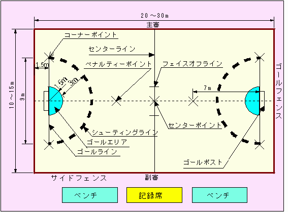
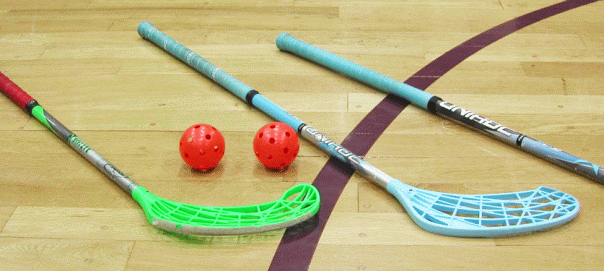
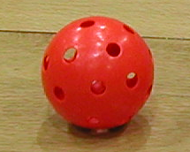
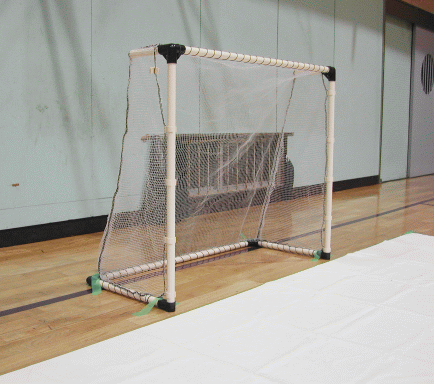
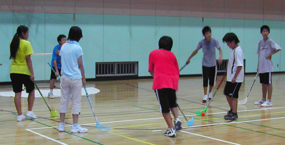

ネオホッケー（旧：ユニホック）とは
プラスティック製のスティックと、プラスティック製でスピードの出にくいボールを使うミニホッケーの一種です。
６対６で、体育館でゲームを行います。
スティックでボールを打ち合い、相手のゴールに入れて得点を競うという、とても分かりやすい競技です。
コート
体育館にコートを設けます。コートサイズは、縦２０～３０ｍ，横１０～１５ｍ程度です。
コートを複数設営する場合や、参加者が小学生の場合は、１５ｍ×１０ｍ程度のコートにすることもあります。
競技会では、高さ３０ｃｍ程度のフェンスでコートを囲います。

上記の図面は、長野県体育センターのニュースポーツ資料からの抜粋です。
なぜ神奈川体育センターでないのかと言いますと・・・・単に、見つからなかったから。
用具
・スティック
・ボール
・ゴール
プラスティック製のスティック：長さ８０～１００ｃｍ
同じく、プラスティック製のボール：直径７．２ｃｍ 重さ２０ｇ（↓）


（←）ボールだけ、アップ。
中空で、穴が開いているため、スピードが出にくくなっています。
ゴール
サイズは、幅１０５ｃｍ，高さ９０ｃｍ，奥行き４５ｃｍです。
ちなみに、写真のゴールは元ユニホック協会会長のお手製！！
2015年度よりゴールのサイズが一回り大きくなります。

この他にも、キーパー用のフェイスマスクもありますが、普及競技会では義務付けられていません。
また、競技会の際には、ゼッケンをつけます。
ゲームの進め方
１ゲームは７分×２セット，もしくは１０分×１セット。１チームは6人。
- フェイスオフによるスタート
チームの代表者同士が、センターポイントに置いたボールを主審の合図で取り合います。
- ゴール後
ゴール後も、フェイスオフにより競技を再開します。
- 競技の中断と再開
ボールがコートの外に出た場合や、ファールがあった場合、その地点から３ｍ以内の位置でフリーストロークが行われます。どちらのファールか不明な場合は、その地点でフェイスオフを行います。
- シューティングエリア内のファール
シューティングエリア内でファールが有った場合は、攻撃側，守備側で再開場所が変わります。
- 守備側の反則であった場合は、攻撃側は、シューティングラインの外側からフリーストローク
- 攻撃側の反則であった場合は、守備側は、反則のあった地点から３ｍ以内の位置でフリーストローク
ルール
安全性を重視するため、厳しめのルールがあります。
- 手や足，体を使ってボールをコントロールしてはダメ
- スティックを振り上げてはダメ
- コート内にスティックを落としてはダメ
- コート内に寝転んではダメ → これは転んでもアウトです
- ボール以外の方向から、相手のスティックを打ってはダメ
- 相手の後ろから、相手にスティックを差し込んではダメ
- 相手にぶつかってはダメ
それ以外にも、ゲーム性を高めるためのルールもあります。
以下、反則（ファール）の一覧です。
| キッキング・ザ・ボール | ボールを足で蹴ったり、踏んだりすること。 |
| ハッキング・ザ・ボール | 空中のボールを手または腕で止めること。動きながらボールに当たること。 |
| ハイ・スティック | スティックのブレード部分を膝より高く振り上げてプレーすること。 |
| クラッシング | スティックで相手プレーヤーのスティックを故意に打って妨害したり、押さえたり、持ち上げたりすること。 |
| シャフトボール | 膝より上のボールをスティックのシャフトで操作すること。 |
| スローイング・ザ・スティック | スティックを故意に投げたり、落としたりすること。 |
| スライディイング・ストローク | 手や膝を付いたり、寝そべってプレーすること。 |
| チャージング | 相手チームのプレーヤーに対して、蹴る、掴む、押す、タックルするなど身体に接触すること。また、スティックで叩いたり引っ掛けたりすること。 |
| ダブル・ストローク | フリーストロークまたはペナルティストロークをしたプレーヤーが２度続けてボールに触れること。 |
| ステップ・イン・オフェンス | 足などが、相手チームのゴールエリアに踏み入ったりすること。 |
| ステップ・イン・ディフェンス | 足・手などが、見方チームのゴールエリアに踏み入ったりすること。 |
| スティック・イン・ゴール | スティックを相手ゴール内に入れてプレーすること。 |
| プッシング・ザ・ゴール | ゴールポストを動かしたり、握ってプレーすること。 |
| オーバー・ザ・ライン | ペナルティストローク時、ボールがゴールラインを通過またはゴールポストに当たる前にプレーヤーが前方に飛び出すこと。 |
| オーバー・ザ・タイム | フリーストロークまたはペナルティストロークを行うプレーヤーが、笛の合図から３秒以上経過してプレーすること。 |
| オブストラクション | その他、危険な行為および審判に暴言を吐くなどの行為。 |
競技風景・・・ではなくて、遊んでいる風景
 体力があり余っている中学生は、休憩時間も、キーパー練習やシュート練習をして遊んでいます。